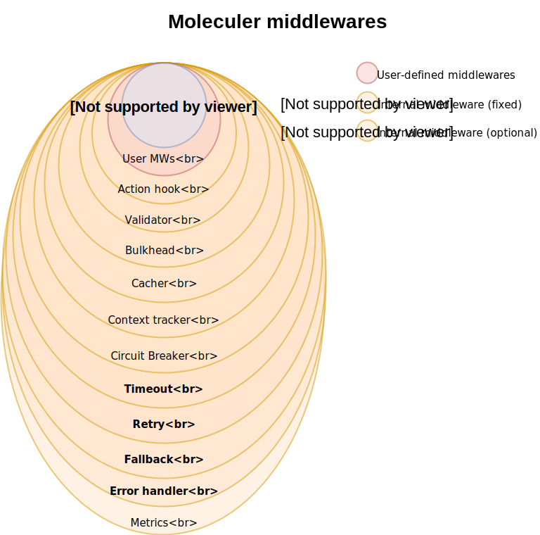

Moleculer supports middlewares. The middleware is an Object with hooks & wrapper functions. Wrap action handlers, event handlers, broker methods and hook lifecycle events.
All available methods:const MyCustomMiddleware = {
// Wrap local action handlers (legacy middleware handler)
localAction(next, action) {
return function(ctx) {
// Change context properties or something
return next(ctx)
.then(res => {
// Do something with the response
return res;
})
.catch(err => {
// Handle error or throw further
throw err;
});
}
},
// Wrap remote action calling
remoteAction(next, action) {
return function(ctx) {
// Change context properties or something
return next(ctx)
.then(res => {
// Do something with the response
return res;
})
.catch(err => {
// Handle error or throw further
throw err;
});
}
},
// Wrap local event handlers
localEvent(next, event) {
return function(payload, sender, eventName) {
// Change payload or something
return next(payload, sender, eventName);
};
},
// Wrap broker.createService method
createService(next) {
return function(schema, schemaMods) {
console.log("The 'createService' is called.");
return next(schema, schemaMods);
};
},
// Wrap broker.destroyService method
destroyService(next) {
return function(service) {
console.log("The 'destroyService' is called.");
return next(service);
};
},
// Wrap broker.call method
call(next) {
return function(actionName, params, opts) {
console.log("The 'call' is called.", eventName);
return next(actionName, params, opts).then(res => {
console.log("Response:", res);
return res;
});
};
},
// Wrap broker.mcall method
mcall(next) {
return function() {
console.log("The 'call' is called.", eventName);
return next(...arguments).then(res => {
console.log("Response:", res);
return res;
});
};
},
// Wrap broker.emit method
emit(next) {
return function(eventName, payload, groups) {
console.log("The 'emit' is called.", eventName);
return next(eventName, payload, groups);
};
},
// Wrap broker.broadcast method
broadcast(next) {
return function(eventName, payload, groups) {
console.log("The 'broadcast' is called.", eventName);
return next(eventName, payload, groups);
};
},
// Wrap broker.broadcastLocal method
broadcastLocal(next) {
return function(eventName, payload, groups) {
console.log("The 'broadcastLocal' is called.", eventName);
return next(eventName, payload, groups);
};
},
// After a new local service created (sync)
serviceCreated(service) {
console.log("Service created", service.name);
},
// Before a local service started (async)
serviceStarting(service) {
console.log("Service is starting", service.name);
},
// After a local service started (async)
serviceStarted(service) {
console.log("Service started", service.name);
},
// Before a local service stopping (async)
serviceStopping(service) {
console.log("Service is stopping", service.name);
},
// After a local service stopped (async)
serviceStopped(service) {
console.log("Service stopped", service.name);
},
// After broker is created (async)
created(broker) {
console.log("Broker created");
},
// Before broker starting (async)
starting(broker) {
console.log("Broker is starting");
},
// After broker started (async)
started(broker) {
console.log("Broker started");
},
// Before broker stopping (async)
stopping(broker) {
console.log("Broker is stopping");
},
// After broker stopped (async)
stopped(broker) {
console.log("Broker stopped");
}
}
Wrapping handlers
Some hooks are wrappers. It means you must wrap the original handler and return a new Function.
Wrap hooks where the first parameter is next.
Wrap local action handlerconst MyDoSomethingMiddleware = {
localAction(next, action) {
if (action.myFunc) {
// Wrap the handler
return function(ctx) {
doSomethingBeforeHandler(ctx);
return handler(ctx)
.then(res => {
doSomethingAfterHandler(res);
// Return the original result
return res;
})
.catch(err => {
doSomethingAfterHandlerIfFailed(err);
// Throw further the error
throw err;
});
}
}
// If the feature is disabled we don't wrap it, return the original handler
// So it won't cut down the performance at calling where the feature is disabled.
return handler;
}
};
Example validator middlewareconst MyValidator = {
localAction(next, action) {
// Wrap with a param validator if `action.params` is defined
if (_.isObject(action.params)) {
return ctx => {
this.validate(action.params, ctx.params);
return next(ctx);
};
}
return next;
}
};
The next is the original handler or the following wrapped handler. The middleware should return either the original handler or a new wrapped handler. As you can see above, we check whether the action has a params props. If yes, we’ll return a wrapped handler which calls the validator module before calling the original handler.
If the params property is not defined, we will return the original handler (skipped wrapping).
If you don’t call the original
nextin the middleware it will break the request. It can be used in cachers. For example, if it finds the requested data in the cache, it’ll return the cached data instead of calling thenext.
Example cacher middlewareconst MyCacher = {
localAction(next, action) {
return function cacherMiddleware(ctx) {
const cacheKey = this.getCacheKey(action.name, ctx.params, action.cache.keys);
const content = this.get(cacheKey);
if (content != null) {
// Found in the cache! Don't call next, return with the cached content
ctx.cachedResult = true;
return Promise.resolve(content);
}
// Call the next
return next(ctx).then(result => {
// Afterwards save the response to the cache
this.set(cacheKey, result);
return result;
});
}.bind(this);
}
};
The
nextalways returns aPromise. So you can access to responses and manipulate them, as well.
Decorate core modules (extend functionality)
With other hooks are help you to add new features to ServiceBroker & Service.
Decorate broker with a new allCall methodconst broker = new ServiceBroker({
middlewares: [
{
// After broker is created
created(broker) {
// Call action on all available nodes
broker.allCall = function(action, params, opts = {}) {
const nodeIDs = this.registry.getNodeList({ onlyAvailable: true })
.map(node => node.id);
// Make direct call to the given Node ID
return Promise.all(nodeIDs.map(nodeID => broker.call(action, params, Object.assign({ nodeID }, opts))));
}
}
}
]
});
await broker.start();
// Call `$node.health` on every nodes & collect results
const res = await broker.allCall("$node.health");
Internal middlewares
Many integrated features have been exposed to internal middlewares. These middlewares are loaded by default when broker is created. It can be turned off with the internalMiddlewares: false in broker option. In this case you must add what you need in the middlewares: [] broker option.
Internal middlewares
| Class name | Type | Description |
|---|---|---|
ActionHook |
Optional | Action hooks handler. Read more |
| Validator | Optional | Parameter validation. Read more |
Bulkhead |
Optional | Bulkhead feature. Read more |
| Cacher | Optional | Cacher middleware. Read more |
ContextTracker |
Optional | Context tracker feature. Read more |
CircuitBreaker |
Optional | Circuit Breaker feature. Read more |
Timeout |
Always | Timeout feature. Read more |
Retry |
Always | Retry feature. Read more |
Fallback |
Always | Fallback feature. Read more |
ErrorHandler |
Always | Error handling. |
Metrics |
Optional | Metrics feature. Read more |
Access to internal middlewaresconst { Bulkhead, Retry } = require("moleculer").Middlewares;
